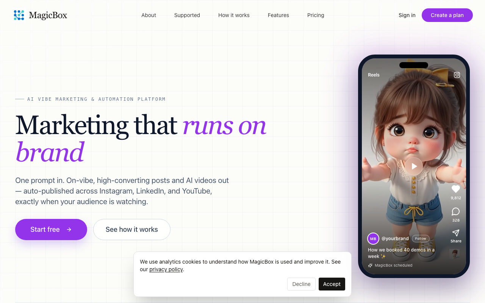
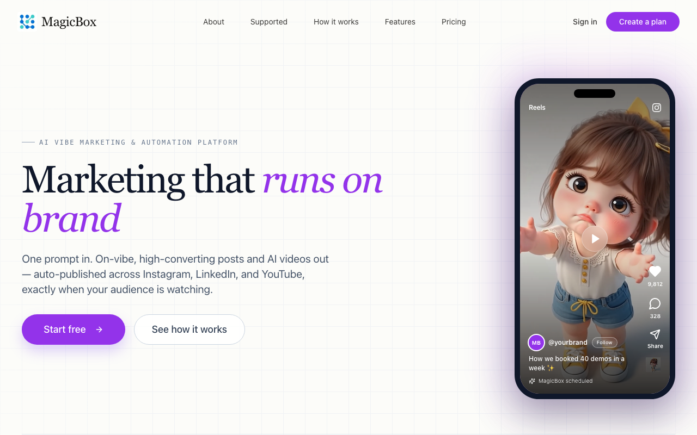
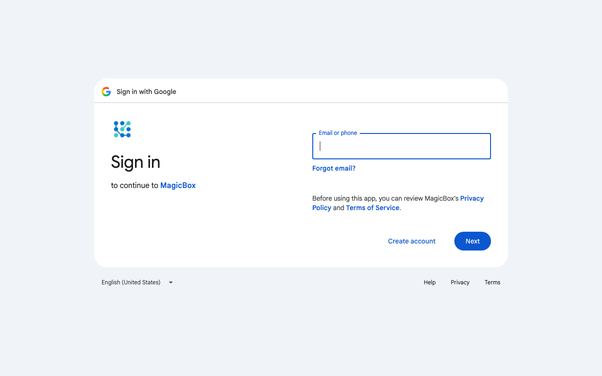
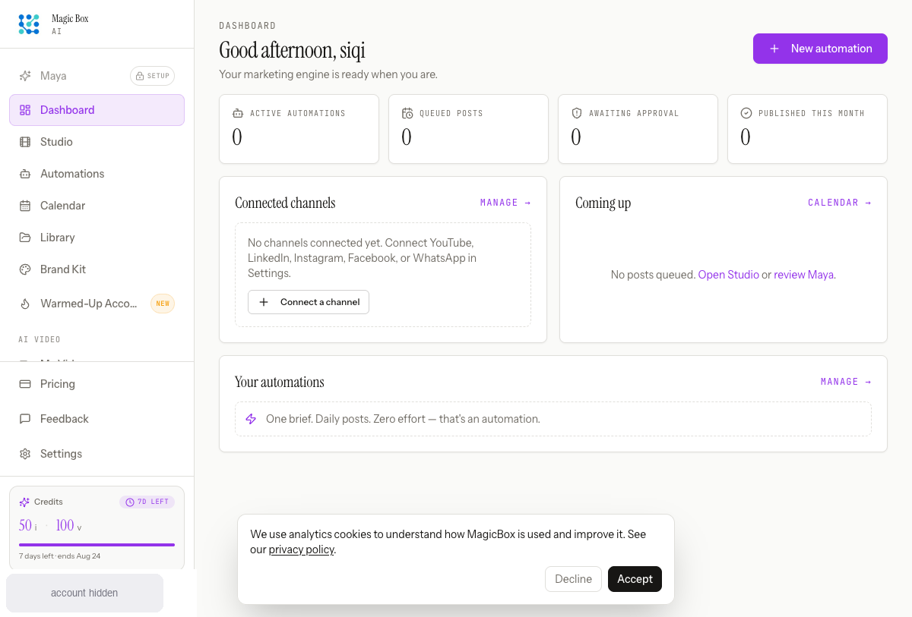
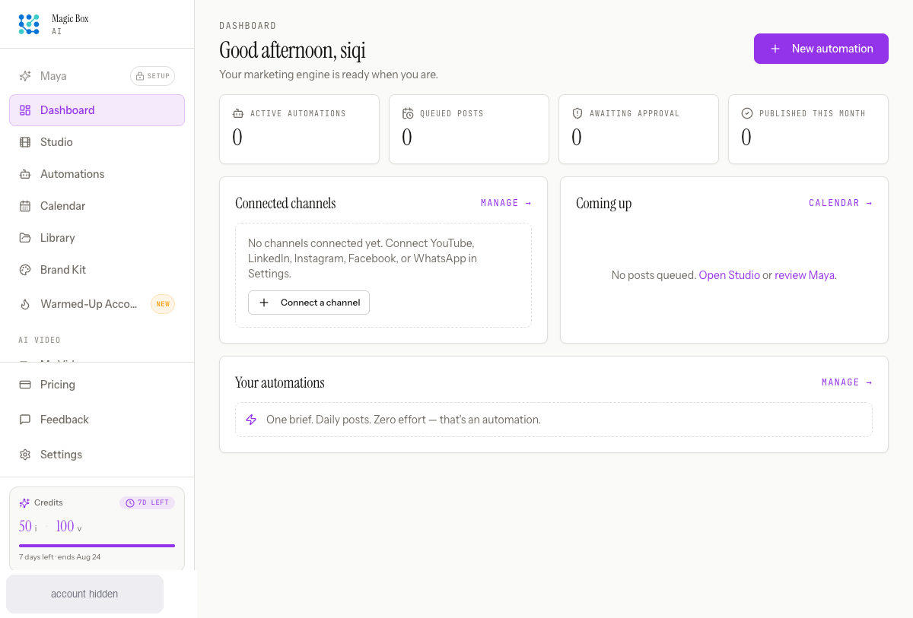
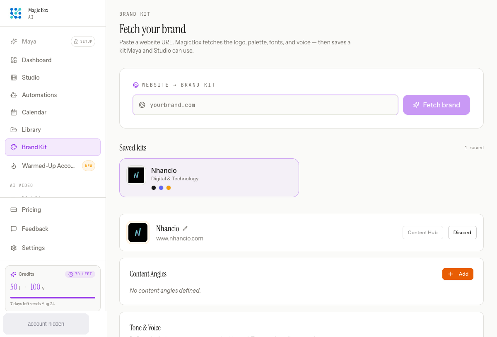

Think aloud: One prompt in, posts out for Instagram, LinkedIn AND YouTube — that's literally my weekly headache. And they list an approval queue, which I need before anything auto-publishes. Let me clear this cookie banner and get inside.
URL/context: https://magicboxai.in/

Think aloud: This is speaking my language — one brief, posts for all three channels, and an approval queue before anything goes live. I want hands-on, not a tour, so I'm hitting Start free and seeing how fast I can get to a brand kit.
URL/context: https://magicboxai.in/

Think aloud: I reached the product login page while this run is configured for Google account state. I need the user to complete Google sign-in before I can evaluate the product.
URL/context: https://accounts.google.com/v3/signin/identifier

Think aloud: I'm in — dashboard's clean and I can see the approval queue concept right up top, which is exactly what I need. First let me clear this cookie banner, then I'm heading straight to Brand Kit.
URL/context: https://app.magicboxai.in/

Think aloud: Logged in and the dashboard is clean — zeroes everywhere, which makes sense for a fresh account. Brand Kit is right there in the nav, and that's my first stop before I trust any AI with my voice.
URL/context: https://app.magicboxai.in/

Think aloud: Ohh there's already a kit saved here with palette colors — good, I don't have to start from zero. But the voice rules are empty, and that's the thing I care about most, so I'm writing my actual tone rules in first.
URL/context: https://app.magicboxai.in/brand
Think aloud: I can keep moving through the visible product flow: Submit the Do's rule via Enter, a common pattern for tag-style inputs with an Add button.
URL/context: https://app.magicboxai.in/brand
Think aloud: Hmm, my voice text ended up in the website field and it's now fetching — logo, colors, voice, the whole thing. There's already a Nhancio kit saved, so I'm letting this finish to see what it actually pulls in.
URL/context: https://app.magicboxai.in/brand
Think aloud: The fetch finished and there's a Nhancio kit saved with colors pulled in. My voice line is still sitting in the website field though — wrong spot. I want to scroll down to the Tone & Voice section and set my actual voice there.
URL/context: https://app.magicboxai.in/brand
Think aloud: There it is — Tone & Voice with Do's and Don'ts. THIS is where my voice line belongs, not that URL field. Adding my founder-voice rule now.
URL/context: https://app.magicboxai.in/brand
Think aloud: I can keep moving through the visible product flow: Click the Add button next to the Do's field to save the voice rule to the kit.
URL/context: https://app.magicboxai.in/brand
Think aloud: Hmm, my voice rule didn't stick — Do's still says 0/10. Not great that there's no feedback on why. Let me re-enter it and hit Add again, watching that counter this time.
URL/context: https://app.magicboxai.in/brand
Think aloud: I can keep moving through the visible product flow: Click the Add button next to the Do's field to save the voice rule; will verify the counter increments to 1/10 next step.
URL/context: https://app.magicboxai.in/brand
Think aloud: There we go — the voice rule finally stuck, Do's shows 1/10 now, and the fetch pulled in my palette colors on the saved kit. Kit's good enough to test the real promise: where do I drop a campaign brief? Studio sounds like the creation hub, so I'm heading there.
URL/context: https://app.magicboxai.in/brand
Think aloud: Studio's exactly what I hoped — one brief box, channel and format pickers, and my Nhancio kit loaded up top. I'm swapping the placeholder for my real product-update brief, then hitting Generate to see if the output actually sounds like my brand.
URL/context: https://app.magicboxai.in/studio
Think aloud: I can keep moving through the visible product flow: Click Generate to produce the channel-ready post from the brief using the configured brand kit.
URL/context: https://app.magicboxai.in/studio
Think aloud: I hit Generate and now the button's greyed out — looks like it's actually processing my brief. Giving it a beat to come back with something before I judge.
URL/context: https://app.magicboxai.in/studio
Think aloud: It actually generated — full caption, hashtags, and an Instagram preview under my brand handle. The copy is honestly decent: casual, on-brief, not robotic. Before anything gets scheduled, I want this parked somewhere I can review it, so let me clear this little overlay first.
URL/context: https://app.magicboxai.in/studio
Think aloud: The caption actually sounds like my brand — casual, clear, not robotic. I'm not posting now though; I want this parked in a draft queue I can review first, so nothing goes live without my eyes on it.
URL/context: https://app.magicboxai.in/studio
Think aloud: Hmm, it threw a 'publish failed' error saying Instagram needs an image — even though the preview clearly has one. Did my draft save at all? Drafts should live in the Library, so I'm checking there before I redo anything.
URL/context: https://app.magicboxai.in/studio
Think aloud: Library says 'nothing created yet' — so that draft may not have saved at all after the error. Before I panic and redo everything, let me hit Refresh and also peek at the Drafts tab to be sure.
URL/context: https://app.magicboxai.in/posts
Think aloud: Refresh didn't change anything — the Library is still empty, so that draft really didn't save. Before I write this off, let me check the Approval tab directly, since that's the queue I'd actually review before anything goes live.
URL/context: https://app.magicboxai.in/posts
Think aloud: Approval's empty too — so that 'save' actually died on a server error: Instagram needs an image and my post was text-only. Annoying, but at least the error tells me the fix. Back to Studio to regenerate with a visual attached.
URL/context: https://app.magicboxai.in/posts
Think aloud: Now there's an actual image attached to this post — that's exactly what the last save was missing. Let me try Save to Draft again and see if it finally lands in my queue.
URL/context: https://app.magicboxai.in/studio
Think aloud: Now the preview has an actual image attached, which is what the error complained about. Saving to draft again — this time it should land in my approval queue so I can review it before anything schedules.
URL/context: https://app.magicboxai.in/studio
Think aloud: Honestly this caption sounds like me — casual, the sustainability angle, 'Here is what changed.' The image is attached now too. I'm saving this as a draft so it lands in the approval queue, then I'll review it there before anything gets scheduled.
URL/context: https://app.magicboxai.in/studio
Think aloud: The caption, hashtags, and brand image all look genuinely on-brand now — casual, sustainability-focused, exactly my voice. Before I trust this, I need to see it sitting in the approval queue, since nothing should go out without my review.
URL/context: https://app.magicboxai.in/studio
Think aloud: I saved that Glow Serum post as a draft, but the Library says nothing's created yet — where did it go? Let me refresh this and check whether it landed anywhere before I start doubting the save button.
URL/context: https://app.magicboxai.in/posts
Think aloud: Refresh didn't change anything — All is still empty. I saved that post as a draft, so let me check the Drafts tab directly, then Approval. If my post isn't anywhere, that's a real trust problem.
URL/context: https://app.magicboxai.in/posts
Think aloud: Drafts is empty too — that saved post is just gone, which is frustrating. Last stop before I write this off: the Approval tab. That's the queue I actually care about before anything gets scheduled.
URL/context: https://app.magicboxai.in/posts
Think aloud: Approval queue is empty too, and I caught a 'Publish failed — Instagram requires an image or video' error flash by. So my post tried to publish and died? Let me check the Failed tab — that's where it probably landed.
URL/context: https://app.magicboxai.in/posts
Think aloud: Failed is empty too — so my generated post just evaporated? One last sweep of the All tab before I call this. If it's empty, this thing straight-up lost my content.
URL/context: https://app.magicboxai.in/posts
Think aloud: All is empty — my post is just gone, and worse, it apparently tried to publish straight to Instagram without asking me. That's the opposite of 'review before it goes live.' Let me check the Dashboard for any trace before I make my final call on this.
URL/context: https://app.magicboxai.in/posts
Think aloud: Dashboard confirms it — zero awaiting approval, zero queued, no channels even connected, yet it tried to push my post straight to Instagram behind my back and then lost it. The brand kit setup was genuinely smooth, but if the approval step can't hold my content, I'm not connecting my accounts here. I'm out.
URL/context: https://app.magicboxai.in/